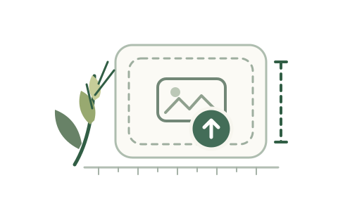

Start a measurement
Import an image or open the sample result
Calibration changed · rerun recommended
Connecting to the local inference service…
0.0 s
Layers
Seed
Hop 1
Hop 2
Hop 3+

Start with an image
Import an image to calibrate and measure representative awns.
JPG, PNG, WebP · multiple files supported
Source image preview · release Ctrl to restore overlays